Choose a scope
Tap a scope’s title to change it or choose Off. Use an Add scope menu above the plots to fill an empty position. Up to four scope positions are available.
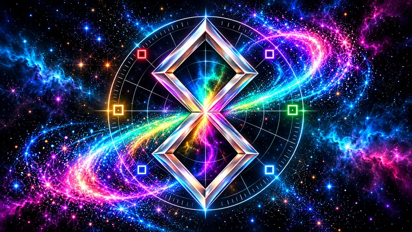
Show scopes (both familiar & new) for DaVinci Resolve using a tablet, phone, laptop or any display with a browser connected to your network.
This release requires macOS 27 or later. You need DaVinci Resolve on a Mac, a recent web browser, and a shared local network. GTap is the Resolve effect that sends the picture to Ghetto Scopez. Nothing needs installing on your phone or tablet.
Use GS → Stop Server to stop serving scopes, and Start Server to start again. Quit Ghetto Scopez stops the server and closes the menu-bar app until you open it again or next log in. To reopen it, launch Ghetto Scopez from Applications. Show Log opens the server log.
The universal installer supports Apple silicon and Intel Macs. It is signed with Developer ID and notarised by Apple, with the notarisation ticket attached for offline verification. Allow local network access if macOS asks, otherwise this will not work.
To update, quit Resolve, stop the old host and run the new installer. Then reopen Resolve. Saved viewer settings stay in the browser when you use the same address.
To remove Ghetto Scopez, quit Resolve and choose GS → Quit Ghetto Scopez. Delete /Library/LaunchAgents/com.vidarandersen.ghettoscopez.plist, /Applications/Ghetto Scopez.app and /Library/OFX/Plugins/SignalLabTap.ofx.bundle, then log out and back in. macOS may ask for your administrator password.
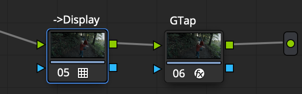
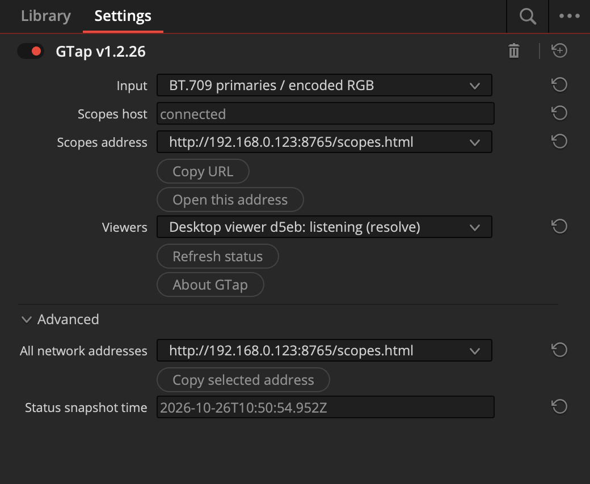
The scopes measure the image at GTap’s node. Choose the input declaration and level range to match that image.
Place GTap at the point in your grade you want to measure, before the display transform. In GTap’s Input menu, choose Source / working-space RGB — no transform.
The scopes read the float32 RGB values supplied to GTap. Negative values and values above 1 are retained; widen the measurement level range in Settings to see them. RGB parade, histograms, DoubleD and the colour cube use these raw values.
The working-space notice identifies this mode. Waveform and tonal splits use weighted RGB with fixed BT.709 coefficients; vectors use the corresponding RGB differences. These are numerical views, not calibrated working-space luma or display chroma. Display targets and the skin-tone guide are hidden, and axes show float values. Preview and trace colours are raw visualisations without a display transform.
This option does not detect or convert your project’s primaries, gamma or log encoding. To measure a display conversion instead, put GTap after that conversion and choose the matching encoded BT.709 or BT.2020 option.
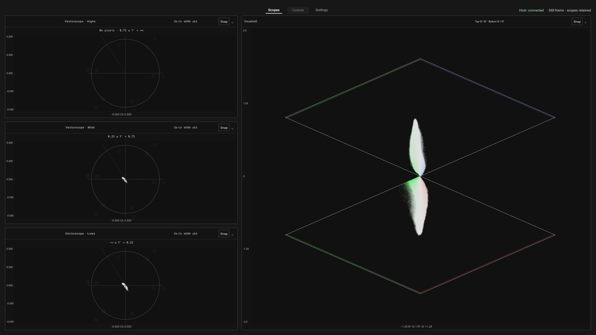
Tap a scope’s title to change it or choose Off. Use an Add scope menu above the plots to fill an empty position. Up to four scope positions are available.
Open Settings to choose Single scope, Two scopes side by side, a balanced grid, a row, a stack or a group beside the main scope. The two-scope layout gives both plots equal space. If all scopes are off, tap Choose layout in the middle of the screen. On a phone in portrait, a single scope or vertical stack gives each plot more room.
Tap Controls to reveal listening, trace and overlay controls. The popup fades after a short idle period; tap Controls again to reopen it.
Tap Fullscreen for more space. Availability depends on the browser.
Gain brings faint trace detail forward. Brightness changes how bright the trace looks. These controls change the display, not your grade. Colour and smoothing options let you choose the trace appearance.
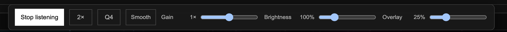
Use pinch or the mouse wheel on supported plots to zoom. Use Reset to return to the starting view. Vectorscope magnification enlarges the trace while reference markings stay in place.
Detail Level changes plot detail independently of zoom. Cycle Q1–Q4 beside the zoom button in Controls, or choose Detail Level in Settings. Q increases waveform and parade columns (512–2048), histogram bins (1–4 times the selected signal precision), vectorscope grids (512–2048 per axis), DoubleD grids (512 × 1024–2048 × 4096), saturation/luma grids (256–1024 per axis), hue bins (360–1440) and colour-cube resolution (16, 32, 64 or 128 per axis). Higher detail uses more processing and memory; all source pixels still contribute.
Smooth softens trace detail in every scope. Histogram smoothing follows the value axis, hue smoothing wraps around the colour wheel, and the colour cube uses soft point edges. Scope measurements and source pixels remain unchanged. DoubleD always preserves its proportions.
The host indicator tells you whether the viewer is connected. The frame status tells you whether fresh data is arriving. A paused image can stay on screen while you compare or grade it.
The highlight and shadow boundaries can be adjusted in Settings.
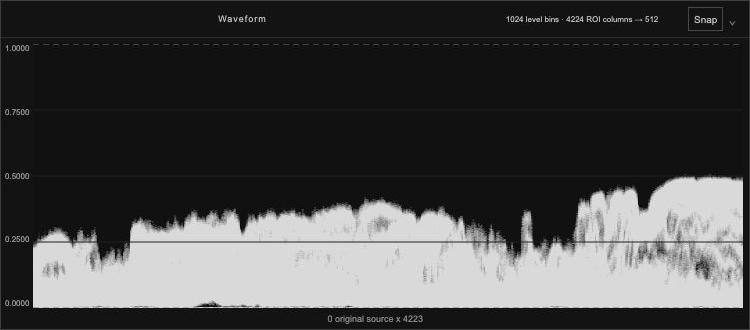
Shows levels from the left to the right of your image. Higher marks mean higher signal levels. Choose a plain trace, source colours or false colours by level.
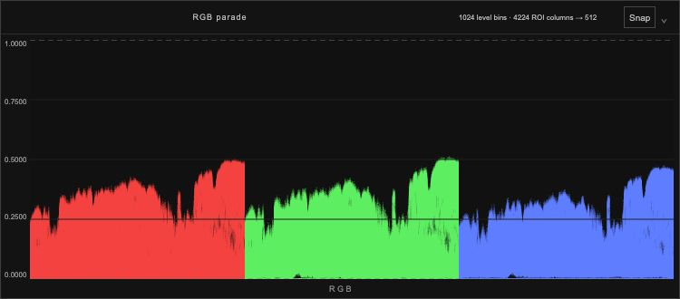
Shows red, green and blue levels side by side. Compare the channels to spot colour casts and differences in their high and low levels.
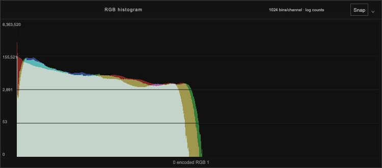
Shows how many pixels sit at each channel level. Choose overlaid channels, separate channels or a single colour channel.
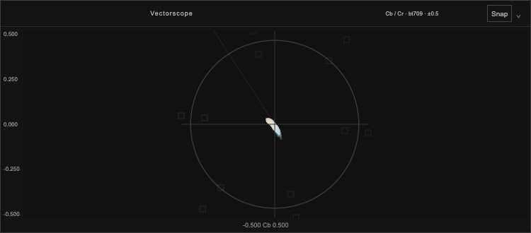
Show colour direction and strength. Marks near the centre are less colourful; marks farther out are more colourful. Choose the full image, highlights, midtones, shadows or a combined highs/mids/lows strip.
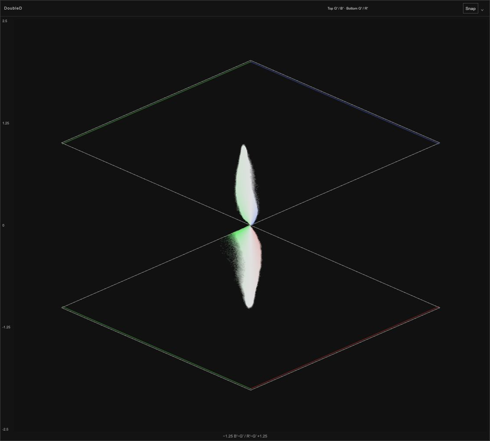
Shows colour balance across image levels in two related plots. Choose a vertical or horizontal orientation. Colour guides remain visible even with a plain trace; the neutral axis is optional. DoubleD keeps its proportions in every layout, including a single full-size slot.
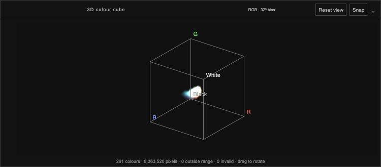
Shows the spread of RGB colours in a cube. Drag with a mouse or finger to rotate it, pinch or scroll to zoom, and use Reset to restore the view.
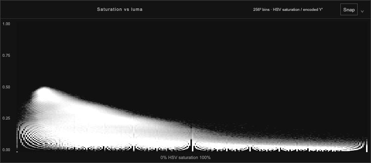
Shows colour strength from left to right and encoded luma from bottom to top. Use it to see whether stronger colours sit in darker or brighter parts of the image.
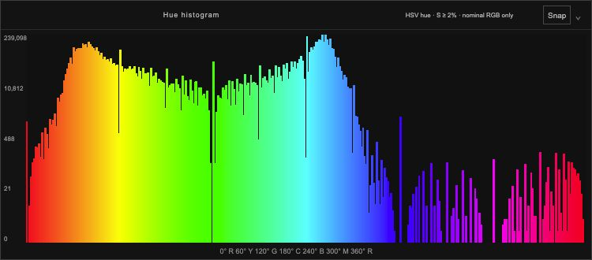
Shows which hue angles appear most often. Almost grey and very dark pixels are excluded because they do not give a useful hue reading.
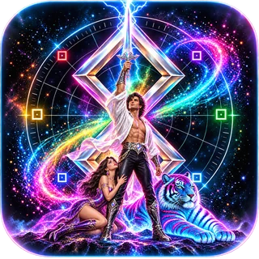
Across a trillion blazing galaxies, the intergalactic Prince of the Universe and his neon tiger seek diamonds beyond counting. Empires tremble. Stars bow. Fabulous destiny awaits.
Use an image region to measure one part of the picture. The rest of the image is left out of the scope readings.
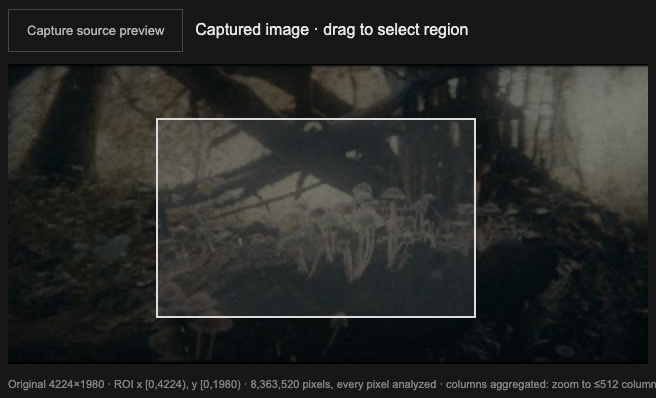
Limit the scope readings to a colour or a range of similar colours.
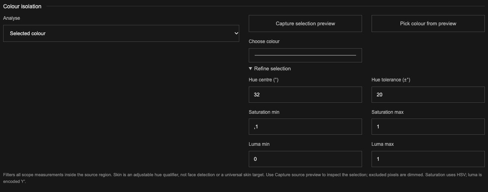
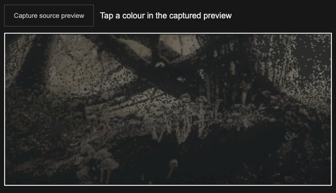
The selection applies to all scopes, inside your chosen image region. Skin hue range selects colours, not faces; adjust it for your subject and lighting.
Keep a scope trace as a reference while you adjust the grade. The reference appears over the live trace so you can compare them.
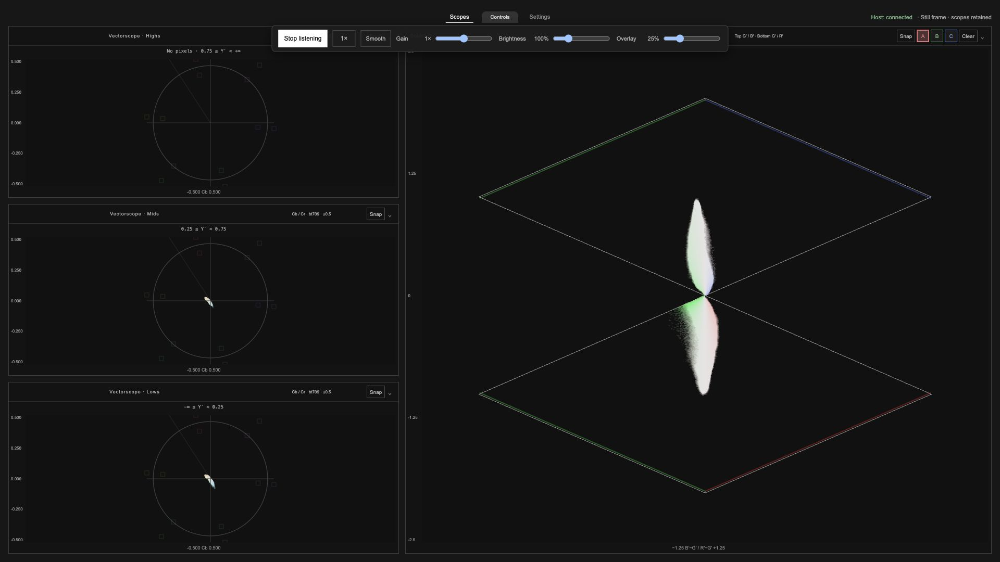
Each scope keeps three references. A fourth capture replaces the oldest. A reference with an incompatible range or colour space is hidden until the settings match.
References stay in that browser on that device and are separate from settings files. Clearing browser data can remove them.
The viewer remembers your settings in the current browser. Use Save settings to save a settings file, and Load settings to open one on another device. On phones and tablets, the browser may put saved files in Downloads; use the Files app or browser download menu to find them.
Reset to defaults restores the starting setup. Settings files do not include saved A/B/C scope references.
Quality changes the display resolution of the plots. Auto is a good starting point; lowering it can help a slower device. It does not change the chosen image region. Keep Debug off for normal use.
Check that the host is still running on the Mac and both devices are on the same local network. Use the current address in GTap’s panel. Allow incoming local connections if the Mac firewall asks. Guest Wi-Fi, a VPN or network isolation can prevent devices from reaching each other.
Tap Start listening. Check that GTap is enabled on a node in the current clip and the panel says the host is connected. Play, scrub or change a grade to send a frame. Check that the scope is not Off and that a colour selection or small region is not excluding the picture.
Check GTap’s node position, declared input primaries and the viewer’s level range. A transform after GTap will not appear in the measurements. Reset the image region and colour selection to include the whole image.
Try fewer scopes, a lower display Quality and a stronger local network connection. Source-coloured waveforms can be demanding. Update speed depends on the picture, Mac, browser and receiving device.
Quit Resolve, rerun the installer and check its result. Reopen Resolve and check the Effects library. If macOS blocks the effect, review the message in Privacy & Security. The supplied effect is not notarized.
Browsers can limit keeping the display awake and fullscreen. Check the device’s auto-lock setting.
For a problem report, include your Mac and device models, OS and browser versions, Resolve version and what you were doing. Report an issue on GitHub.
Ghetto Scopez and GTap are made by Vidar Andersen. Background · Source code
The project’s original code, documentation and supplied header artwork are offered under Creative Commons Attribution–NonCommercial–ShareAlike 4.0 International (CC BY-NC-SA 4.0), to the extent the author holds the rights. Credit Vidar Andersen, link the licence and state any changes. Commercial use is not permitted by this licence. Share adaptations under the same licence. See the full licence for the terms.
Third-party components keep their own licences:
Read the full third-party notices. Node.js is installed automatically when needed, under its own licence and notices. DaVinci Resolve (proprietary; licence supplied with the application), macOS (software licences) and Apple frameworks (developer terms) are separately licensed products; they are not included in this download. This project is not affiliated with or endorsed by Blackmagic Design or Apple.
Header artwork supplied by the tears of real artist. Web versions resized and converted with Pillow (HPND licence) and libwebp (BSD 3-Clause). Coding assistance: OpenAI Codex, a proprietary service (terms). Python (PSF licence), NumPy (BSD 3-Clause) and tifffile (BSD 3-Clause) were also used for validation. These tools are not included in the application download.
The teaser’s glass button uses Amazing Glass by Ivan Tomac (MIT licence), adapted from the Lens Debaser header.
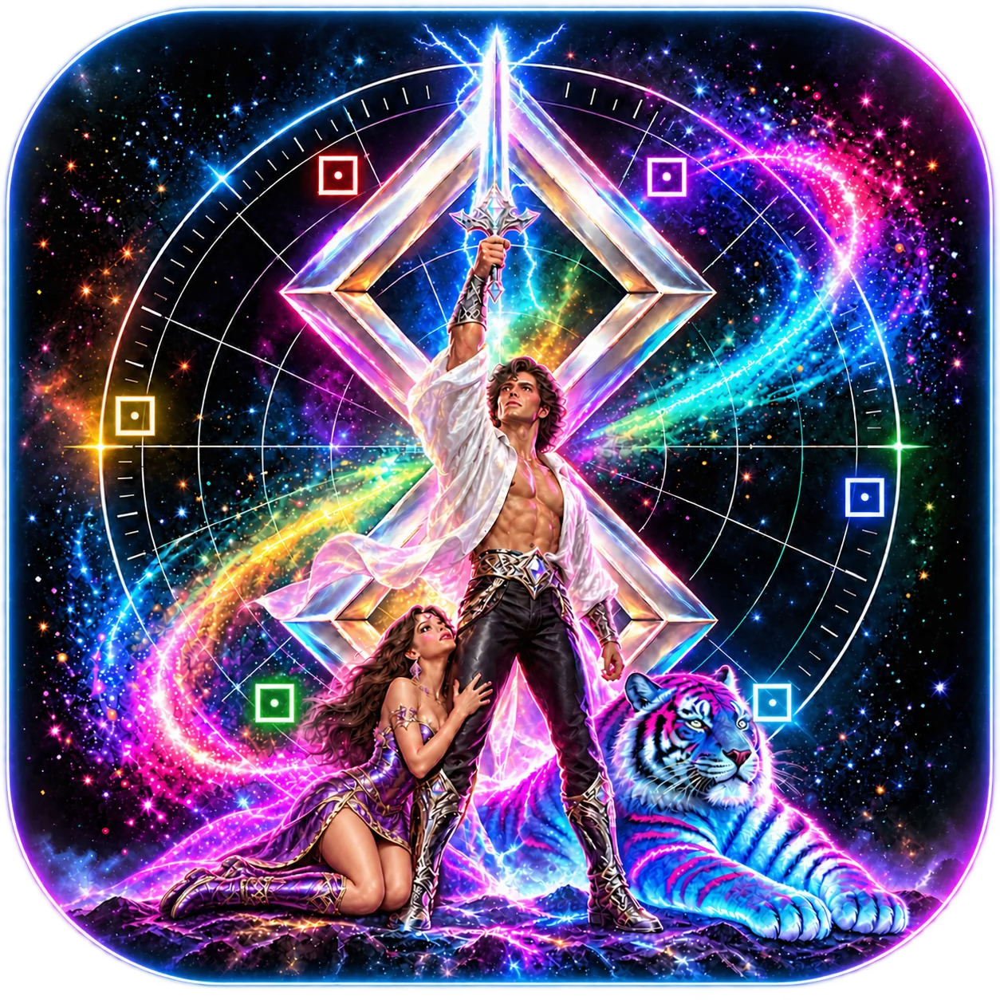